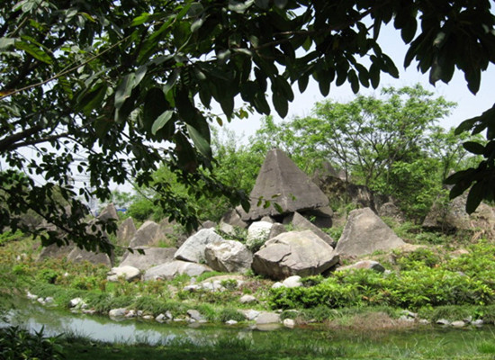
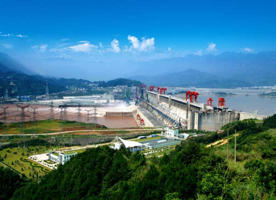
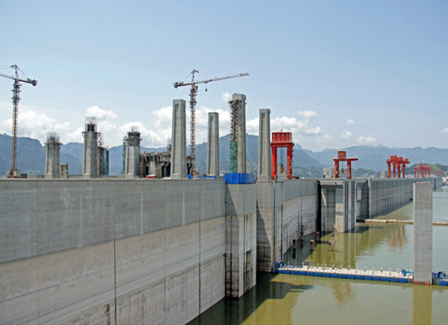
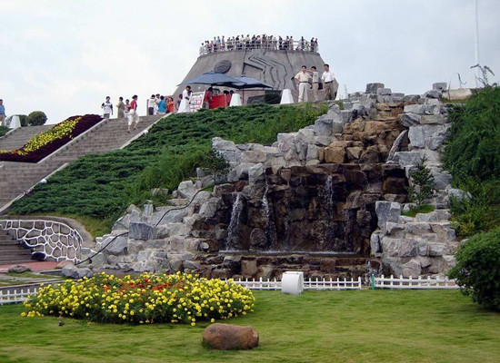

推荐路线：
- 1.滨江公园——世界和平公园——夷陵长江大桥——葛洲坝船闸—三峡大坝———坛子岭——185平台——截流纪念园
- 2.三峡大坝——三峡人家——清江画廊
- 3.三峡大坝——185平台——坛子岭——双线五级船闸——西陵峡——三峡人家——石牌
- 4.三峡——九畹溪——三峡大坝——屈原故里——截流纪念园
截留纪念园：三峡截流纪念园是以三峡工程截流为主题，集游览、科普、表演、休闲等功能于一体的国内首家水利 工程主题公园。景区位于三峡大坝右岸下游800米处，占地面积93万平方米，投资3000万元。景区分入口区、演艺眺望区、遗址展示区和游乐休憩区等4个区域，由截流记事墙、演艺广场、亲水平台、幻影成像、大型机械展示场、攀爬四面体、平抛船等十几个景观组成。



